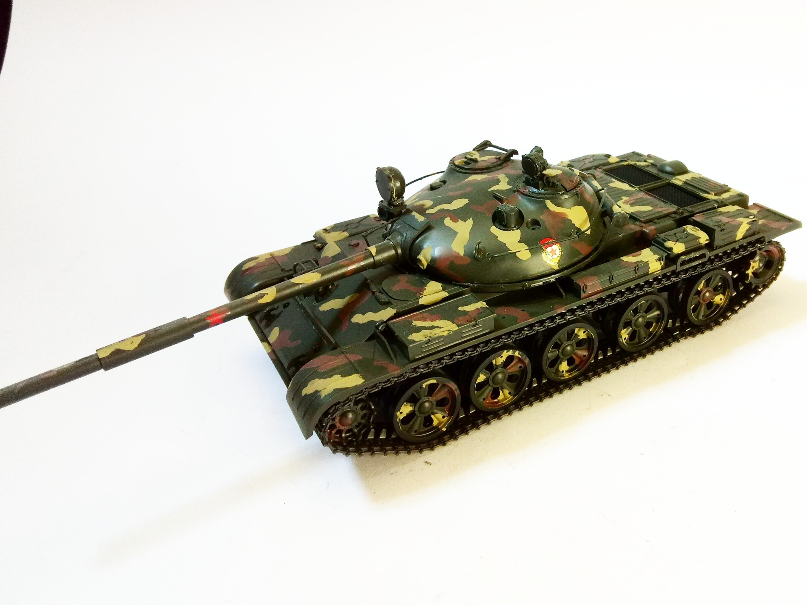

Mezzi militari · scale model archive
Russian Tank T62 A
Russian Tank T62 A — Kit: Tamiya, Scale: 1/35. Camouflage taken from the coerrsponding tank in the Armored Warfare' game ´1/35 #Tamiya #plasticmodel

Photo gallery
English description
Camouflage taken from the coerrsponding tank in the Armored Warfare' game
´1/35 #Tamiya #plasticmodel
Descrizione italiana
Mimetica taken dal coerrsponding autoro nel Armored Warfare' game.
'1/35.